Power Report - Widgets - Grafik
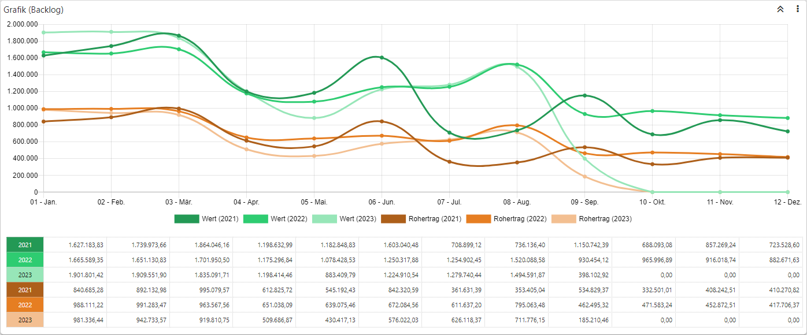
Alle Grafik-Widgets geben das Datenmaterial in Form einer Grafik aus. Hierbei kann die Grafik individuell designt werden.
Einstellungen
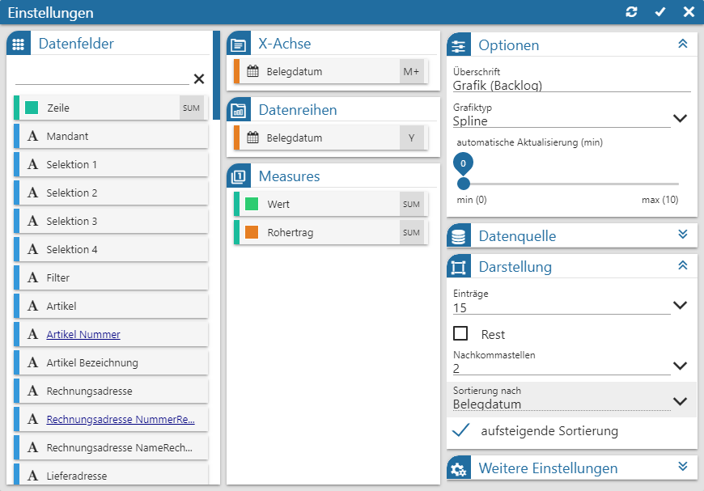
Folgende Eingabefelder, Einstellungen und Informationen stehen zur Verfügung:
Datenfelder
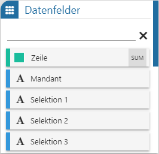
Ø Tabelle "Datenfelder"
In dieser Tabelle werden alle Felder der Datenquelle dargestellt, welche per Drag & Drop in die Tabellen "X-Achse", "Datenreihen" und "Measures" übergeben werden können. Der Power Report unterscheidet hierbei nach den folgenden Datentypen:
ü  - Alphanumerisch
- Alphanumerisch
Es handelt sich um ein
Feld mit alphanumerischen Inhalt.
ü  - Text
- Text
Es handelt sich um ein Feld mit
Langtext.
ü  - Bild (Grafik)
- Bild (Grafik)
Es handelt sind um ein
Feld mit einem Bild als Inhalt. Zur besseren Darstellung wird anstatt der Grafik
der Name des Bilds im Widget angezeigt.
ü  - Datum
- Datum
Es handelt sich um ein Feld des
Typs "Datum", wobei das Darstellungsformat selber bestimmt werden darf. Hierfür
muss nur das Symbol  neben der
Beschreibung des Felds angeklickt werden, wodurch sich die folgende Auswahl
öffnet:
neben der
Beschreibung des Felds angeklickt werden, wodurch sich die folgende Auswahl
öffnet:
ü - Zahl (Measure)
Es handelt sich um ein
Feld mit numerischen Inhalt, wobei dieses in der Regel nur in die Tabelle
"Measure" gezogen werden darf. Neben der Farbe (Anwahl des Symbols ) kann pro Zahlenfeld auch die
Berechnungsmethode (Anwahl des Symbols
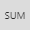
) definiert werden.Hinweis
Mit Hilfe der Suchzeile kann über eine Volltextsuche nach Datenfeldern gesucht werden, wobei das %-Zeichen als Platzhalter verwendet werden kann.
X-Achse
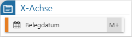
Ø Tabelle "X-Achse"
In dieser Tabelle wird das Feld zugewiesen, auf dessen Grundlage die X-Achse (horizontal) gebildet werden soll.
Datenreihen
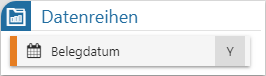
Ø Tabelle "Datenreihen"
Mit Hilfe dieser Tabelle können die Informationen innerhalb der Grafik pro Element der X-Achse detaillierter dargestellt werden. Die aufgesplittete X-Achse wird dabei pro Measure (Y-Achse) in einer (von der Basisfarbe ausgehenden) Farbabstufung angezeigt.
Measure
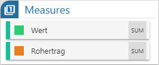
Ø Tabelle "Measure"
In dieser Tabelle werden die Felder des Typs "Zahl" eingefügt, auf deren Grundlage die Y-Achse (vertikale) gebildet werden soll. Neben der Farbe (Anwahl des Symbols ) kann pro Zahlenfeld auch die Berechnungsmethode (Anwahl des Symbols ) definiert werden, wobei folgende Einstellungen zur Verfügung stehen:
ü Summe (SUM)
Mit dieser Option
werden alle Werte summiert und dementsprechend angezeigt.
ü Anzahl (COU)
Mit dieser Option
wird angezeigt, wieviel Datensätze in der Auswertung vorhanden sind.
ü Kleinste (MIN)
Mit dieser
Option wird der kleinste Wert der Auswertung angezeigt.
ü Größte (MAX)
Mit dieser Option
wird der größte Wert der Auswertung angezeigt.
ü Durchschnitt (AVG)
Mit dieser
Option wird der durchschnittliche Wert der Auswertung angezeigt.
Hinweis
Wird mit dem Grafiktyp "Mixed Chart" gearbeitet, so kann pro Measure die Art der Grafik definiert werden:
ü
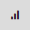
- Bar /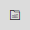
- Stacked BarBei einer "Bar" wird die Zahl in Form eines vertikalen Balkens dargestellt. Sollen hingegeben mehrere Zahlen einer X-Achse in einem einzigen Balken ausgegeben werden, so ist dieses über die "Stacked Bar" zu realisieren.
Hinweis
Das Mischen von "Bar" und "Stacked Bar" ist nicht möglich.
ü - Linie
Die Zahl wird in Form einer
Linie dargestellt
Optionen
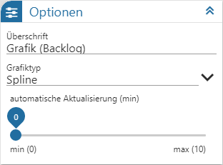
Ø Überschrift
An dieser Stelle wird die Bezeichnung der Grafik definiert.
Ø Grafiktyp
An dieser Stelle wird die Art der Grafik angegeben.
Ø automatische Aktualisierung (min)
An dieser Stelle kann definiert werden, ob sich der Inhalt der Anzeige automatisch aktualisieren soll. Mit der Einstellung "0" findet keine Aktualisierung statt.
Datenquelle

Ø Datenquelle
Dieses Informationsfeld zeigt den Namen der zu Grunde liegenden Datenquelle an.
Ø Datenherkunft
An dieser Stelle kann mit Hilfe einer Auswahlliste definiert werden, aus welchem Bereich der Datenquelle die Daten des Widgets stammen sollen. Die Auswahl "aktuell" steht immer zur Verfügung und spiegelt die im Ausgangsfenster gewählte Datenquelle (temporäre Datenquelle, Snapshot, View oder MasterView) wieder.
Hinweis
Gibt es für die Datenquelle mehrere Snapshots, so sind diese über den Eintrag "xxx (statisch)" (xxx => Name der Auswertung) zusammengefasst. Innerhalb der Snapshots erfolgt die weitere Selektion über den Widget Filter.
Ø  Widget Filter
Widget Filter
Durch Anwahl dieses Buttons wird das Fenster Widget Filter geöffnet. In diesem kann die genutzte Datenquelle nach frei definierbaren Kriterien eingeschränkt werden.
Hinweis
Handelt es sich nicht um eine importiere Datenquelle, so werden die folgenden Selektionskriterien automatisch vorgegeben, wobei ein Editieren selbstverständlich möglich ist:
ü Mandant
Es wird durch die
Filterzeile "Mandant = aktuell" automatisch auf die Daten des aktuellen Mandaten
eingegrenzt.
ü Selektion 1 bis 4 / Filter
Es
wird automatisch auf die Daten jenes Snapshots eingegrenzt, über welchen der
Power Report ausgegeben wurde. Die Filterzeilen hierzu lauten "Selektion X =
aktuell" bzw. "Filter = aktuell".
Hinweis
Mit Hilfe des Widgets Datenquellen Info ist jederzeit nachvollziehbar, was sich gerade hinter "aktuell" verbirgt (Einstellung "Aktuelle Sel.").
Darstellung
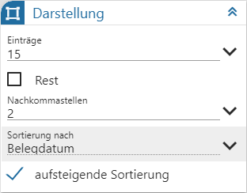
Ø Einträge
Mit Hilfe einer Auswahlliste wird die Anzahl der maximalen Einträge in der Grafik hinterlegt.
Ø Rest
Durch Aktivierung dieser Option wird automatischen ein Bereich mit dem Rest gebildet, wenn aufgrund der Einstellungen "Einträge" nicht alle Elemente dargestellt werden können.
Hinweis
Durch Anwahl des Eintrags "REST" in der Grafik werden automatisch (temporär) die nächsten x Datensätze (x => Einstellung "Einträge") angezeigt. Sollte ein Quickfilter aktiv sein, so steht diese Funktion nicht zur Verfügung.
Ø Nachkommastellen
Aus einer Auswahlliste kann die Anzahl der Nachkommastellen für die Anzeige im ToolTip und der Datentabelle definiert werden.
Hinweis
Bei der Berechnung "Anzahl" wird die jeweilige Measure automatisch ohne Nachkommastellen dargestellt.
Ø Sortierungen nach
An dieser Stelle wird die Sortierung in der Grafik definiert, d.h. ob nach X-Achse oder Measure sortiert werden soll.
Hinweis
Sobald mit einer Datenreihe gearbeitet wird, erfolgt die Sortierung automatisch nach der X-Achse.
Ø aufsteigende Sortierung
Mit Hilfe dieser Option kann auf- oder absteigend sortiert werden.
Weitere Einstellungen
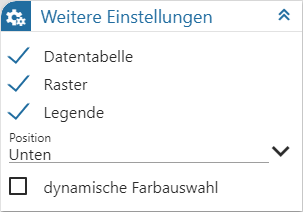
Ø Datentabelle
Durch Aktivierung dieser Option wird unterhalb der Grafik eine Tabelle mit den Daten der Grafik angezeigt.
Ø Raster
Durch Aktivierung dieser Option wird hinter die Grafik eine Rasterung gelegt.
Ø Legende
An dieser Stelle kann hinterlegt werden, ob eine Legende über die X-Achse oder die Measures (abhängig von der Grafik) ausgegeben werden soll.
Ø Position
Hier wird die Position der Legende definiert.
Ø dynamische Farbauswahl
Die "dynamische Farbauswahl" steht ausschließlich zur Verfügung, wenn mit einer Datenreihe gearbeitet wird. Das Aktivieren der Option bewirkt, dass jedes Element der X-Achse eine eigene Farbe zugewiesen bekommt.
Hinweis
Die bei der Measure hinterlegte Farbe wird bei Aktivierung der Option nicht mehr berücksichtigt.
Buttons

Ø Aktualisierung
Mit Hilfe dieses Buttons werden die Einstellungen gespeichert, direkt angewendet und das Einstellungsfenster bleibt geöffnet.
Ø Ok
Durch Anwahl des Buttons "Ok" werden die Änderungen angewendet und das Fenster geschlossen.
Ø Ende
Durch Anwahl des Buttons "Ende" wird das Einstellungsfenster geschlossen und nicht gespeicherte Änderungen verworfen.